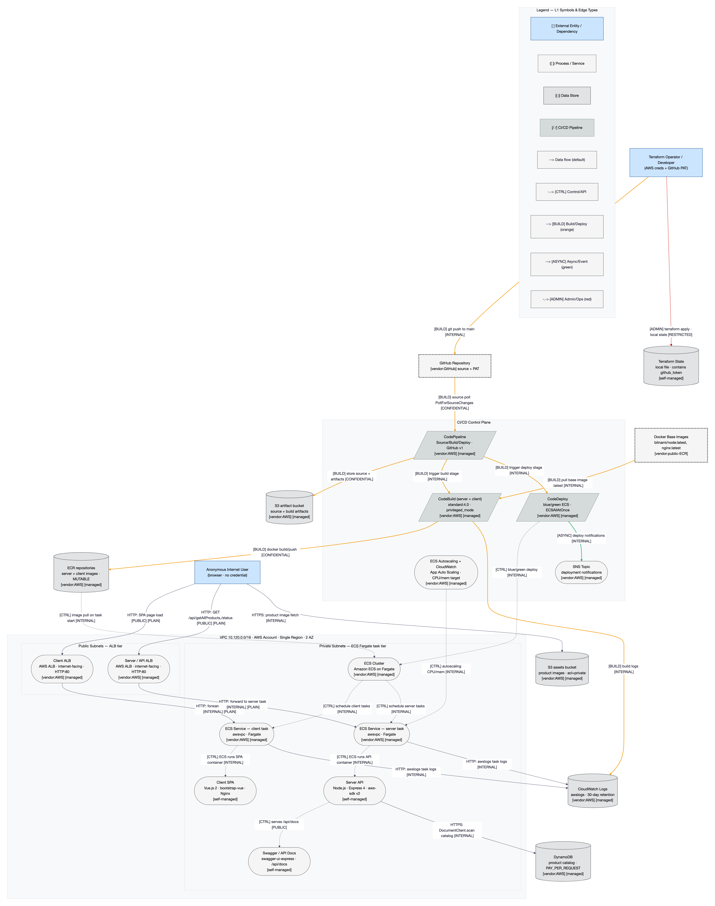

CRITICAL-equivalent for any production system with real or personal data; rated CONCERNING here strictly because of the demo's non-personal scope.
As built, the system defaults to open on every axis: no authentication or authorization anywhere, both public ALBs are HTTP-only (a TLS listener exists in the module but is disabled by default), CORS reflects any origin, egress is unrestricted, and there is no WAF, no image/dependency scanning, and no security logging. The one material mitigant is the data class — the only data processed is a non-personal product catalog (id / path / title, INTERNAL) — which caps confidentiality-driven impact and keeps every individual finding at or below HIGH. The genuinely CRITICAL-grade risk is composite: the CI/CD compromise chain KC03 runs from a stolen PAT or a poisoned dependency, through a no-approval auto-deploy and a privileged build, to account-wide privilege escalation — undetected end to end. This posture would be CRITICAL for any production system holding real or personal data; it is rated CONCERNING here strictly because of the demo's non-personal scope.
CodePipeline / CodeBuild / DevOps role (C9, C10, R3)
A stolen GitHub PAT (TM-012) or poisoned :latest/EOL dependency (TM-018) auto-deploys with no approval gate (TM-013) into a privileged build (TM-015), then escalates via the DevOps role's RegisterTaskDefinition + RunTask + PassRole * (TM-016) to account-wide control — undetected end to end. Full compromise of the running app and the AWS account with no audit trail.
No auth (TM-001) + no rate limit (TM-004) + a full-table DynamoDB scan per request on PAY_PER_REQUEST (TM-005) lets a trivial unauthenticated script drive unbounded AWS spend and saturate the 4-task ceiling — direct financial loss and API outage.
Arbitrary code execution in production (TM-013 / TM-015, individual HIGH, Impact=5)
CodePipeline / CodeBuild (C9, C10, C11)
The no-approval pipeline and the privileged Docker-in-Docker build each independently allow attacker code to reach production with the build's IAM identity — an integrity/availability compromise and a route to account takeover.
Quick Wins
R-01 — Delete iam:PassRole * from the ECS task role (one-statement removal; the app does not use it). Shrinks KC04.
R-02 — Enable TLS: flip enable_https=true + ACM cert + HTTP→HTTPS 301 + HSTS (the HTTPS listener already exists in the module).
R-08 — Gate or disable the public Swagger UI and drop it from the Terraform output.
R-16 — Turn on the audit-evidence plane (CloudTrail + ALB/VPC flow logs + Config + GuardDuty) — cheap, and it makes every other fix verifiable.
R-20 — Add security headers / CSP to the Nginx SPA config (pairs with R-02 HSTS).
IISystem Overview
System Purpose
An MIT-0 AWS reference sample: a Vue.js SPA (client) and a Node.js/Express API (server) run as two independent ECS Fargate services, each behind its own internet-facing Application Load Balancer in a single VPC, all provisioned by Terraform. A GitHub-triggered CodePipeline (CodeBuild + CodeDeploy blue/green) builds Docker images to ECR and deploys to ECS. The API returns a product catalog from DynamoDB; product images are served from S3.
Scope Statement
In scope: the Terraform IaC (Infrastructure/ + modules + Templates), the Node.js/Express API (Code/server), the Vue.js SPA (Code/client), the CI/CD pipeline, and the AWS control surface (ECS/ALB/S3/DynamoDB/ECR/IAM/VPC). Out of scope: AWS-managed physical/environmental controls (shared responsibility), runtime/dynamic penetration testing, deep transitive-dependency CVE enumeration (recorded as EOL/maintenance status, not a full SCA), and organizational policy documents (none exist in the repo). This is a static architectural review of IaC + application code.
Technology Stack
Layer
Technology
Version
Notes
Client
Vue.js (bootstrap-vue, axios) on Nginx
Vue 2 (EOL)
SPA; Login.vue is an inert demo stub
API
Node.js / Express + aws-sdk
Express 4, aws-sdk v2 (maintenance)
3 parameterless routes; open CORS
Compute
AWS ECS on Fargate (awsvpc)
—
2 services, private subnets, min 1 / max 4 tasks
Edge
AWS Application Load Balancer × 2
—
Both internet-facing, HTTP:80 only (no TLS listener)
Task + build logs only (30-day); no CloudTrail/flow logs
IaC
Terraform
≥ 0.13
15 modules; local unencrypted state (holds the PAT)
Deployment Model
AWS cloud, single region, single account, two Availability Zones. Architecture pattern: containerized microservices (two ECS Fargate services) behind public ALBs in a single VPC (10.120.0.0/16) with 2 public + private task subnets, an Internet Gateway, and a single NAT gateway for egress. Delivered as Terraform IaC with local state.
IIIArchitecture Diagram Structural (L1)

Figure 1 — L1 structural data flow diagram. Source: 02-structural-diagram.md. Canonical node ids (C/D/E/TB/R/X) from recon.json.
Component Metadata
Component
Type
Tech Stack
Port/Protocol
Subnet/Zone
Auth Method
Encryption
Notes
C1 Client SPA
Process
Vue 2 / bootstrap-vue / Nginx
HTTP:80
Private subnet (task)
None
None (plaintext)
Login.vue inert; no CSP/security headers
C2 Server API
Process
Node.js / Express 4 / aws-sdk v2
HTTP:3001→:80
Private subnet (task)
None
In-transit to AWS via SDK TLS
3 routes, open CORS, verbose errors
C3 Swagger / API docs
Process
swagger-ui-express
HTTP /api/docs
Private subnet (task)
None
None (plaintext)
Publicly reachable; spec in TF output
C4 Client ALB
Process
AWS ALB
HTTP:80 (0.0.0.0/0)
Public subnet
None
None (no TLS listener)
internet-facing; enable_https default false
C5 Server / API ALB
Process
AWS ALB
HTTP:80 (0.0.0.0/0)
Public subnet
None
None (no TLS listener)
internet-facing; reached directly from browser
C6 ECS Cluster
Process
Amazon ECS on Fargate
—
VPC
IAM (control plane)
AWS-managed
Blue/green deploy target
C7 ECS client service
Process
ECS Fargate, awsvpc
HTTP:80
Private subnet, 2 AZ
SG-source (ALB)
AWS-managed at rest
Runs C1
C8 ECS server service
Process
ECS Fargate, awsvpc
HTTP:3001
Private subnet, 2 AZ
SG-source (ALB)
AWS-managed at rest
Runs C2/C3; task role R2
C9 CodePipeline
CI/CD
AWS CodePipeline, GitHub v1
—
AWS control plane
GitHub PAT / IAM
AWS-managed
PollForSourceChanges on main; no approval gate
C10 CodeBuild
CI/CD
AWS CodeBuild standard:4.0
—
AWS control plane
IAM (DevOps role)
AWS-managed
privileged_mode (Docker-in-Docker)
C11 CodeDeploy
CI/CD
AWS CodeDeploy (ECS blue/green)
—
AWS control plane
IAM (CodeDeploy role)
AWS-managed
ECSAllAtOnce; auto-rollback on failure
C12 Autoscaling + CloudWatch
Process
Application Auto Scaling
—
AWS control plane
IAM
AWS-managed
CPU/mem target tracking; min1/max4
C13 SNS topic
Process
Amazon SNS
—
AWS control plane
IAM
AWS-managed
Deploy notifications; policy undetermined
Trust Boundary Descriptions
TB1 — Internet → public ALBs
Separates the anonymous public Internet from both internet-facing ALBs (SG 0.0.0.0/0:80). It is the primary exposure boundary and is weak: it carries plaintext HTTP with no auth, WAF, or TLS — anything the ALB forwards is implicitly trusted downstream.
TB2 — Public subnet → private subnet (ECS tasks)
Separates the ALB tier from the Fargate task tier. Enforced by security-group chaining (tasks admit ingress only from the paired ALB SG), giving real inbound isolation — but nullified for the app path because the fronting ALB is itself Internet-facing.
TB3 — ECS task → AWS services via IAM task role
Separates the runtime container identity from AWS managed services (DynamoDB/S3). DynamoDB and S3 data actions are ARN-scoped (genuine least privilege), but the task role also carries iam:PassRole * — a latent escalation primitive across this boundary.
The trust chain that turns source into running production code. It has the widest blast radius: a long-lived PAT anchor, unpinned/mutable images, a privileged build, no approval gate, and an over-permissioned DevOps role — the KC03 composite-CRITICAL path.
TB5 — AWS account / region boundary
The outermost cloud boundary. Weak on evidence: no CloudTrail/Config/GuardDuty, so account-level actions (deploys, credential use) are neither detectable nor attributable.
TB6 — VPC perimeter (IGW / NAT egress)
Separates the VPC from the wider Internet outbound. Egress is unrestricted (SG egress -1 to 0.0.0.0/0, NAT to 0.0.0.0/0) with a single NAT gateway — both an exfiltration/C2 channel and an availability single-point-of-failure.
Network Topology
VPC 10.120.0.0/16, single region, 2 Availability Zones. 2 public subnets (ALB tier) + private task subnets (client + server), one Internet Gateway, a single NAT gateway. Full subnet, security-group, and IAM detail is in Section IX.
IVRisk Overlay Diagram L4 threat overlay
Figure 2 — L4 risk overlay. Red = HIGH/CRITICAL, orange = MEDIUM, green = LOW. Thick red edges are the KC01–KC04 attack paths. Source: ecs-fullstack-L4-threat-overlay.mmd / 07-final-diagram.md.
Supply-chain trust anchor. A stolen PAT (TM-012) or poisoned dependency (TM-018) enters here; PollForSourceChanges auto-triggers build+deploy with no approval (TM-013). Entry to the KC03 composite-CRITICAL chain.
Mutable tags + no scan (TM-017) let a push silently replace the running image; the privileged build (TM-015) runs attacker-influenceable code with the DevOps identity (TM-016). KC03 steps 3–5.
R0 → C5 Server ALB → C8 → D1 DynamoDB (anonymous API + full-table scan)
Unauthenticated (TM-001), unthrottled (TM-004) full-table scan per request on PAY_PER_REQUEST (TM-005) — the KC01 economic/availability-denial flow.
R0 → C4 Client ALB → C7 (SPA over plaintext HTTP)
No TLS (TM-002) + no CSP (TM-023) lets an on-path attacker inject script into the delivered SPA — the KC02 content-injection flow.
C8 server task → IMDS → NAT → Internet (container foothold → cloud pivot)
A container compromise (via TM-018) reads task-role credentials from IMDS (TM-011) and exfiltrates over unrestricted egress (TM-020), amplified by PassRole * (TM-010) — the KC04 pivot flow.
IV-ACoverage & Communication Visuals
STRIDE-per-Element Coverage Matrix
Cells: finding id · clean (assessed, no finding) · n/a (category not applicable to element).
14 techniques cited across the finding set; full mapping in Appendix B. A Navigator layer JSON (ecs-fullstack-attack-navigator-layer.json) accompanies this report.
Unpinned :latest mutable tags; no digest pin / scan
X5 CodeBuild managed image
AWS
aws/codebuild/standard:4.0
Dated build image; privileged_mode enabled
Companion diagrams produced (render clean, embedded in the diagram bundle, not inline here): 4 attack trees + 4 attack flows (KC01–KC04), and the SBOM graph. Auth-sequence diagram: not applicable (no authentication exists). Data-lifecycle diagram: omitted (no personal data).
Deduplicated across all tracks per validation merge clusters C1–C13 (49 finding-records → 28 distinct issues). Cross-track source IDs and, where they diverge, CVSS/qualitative scores are shown on each row — highest severity drives prioritization, and lens differences are preserved, never converted. Ordered by severity, then OWASP Risk Rating descending.
HIGHTM-013 main-push auto-deploy to production with no approval gate
ID
TM-013
Severity
HIGH
Affected Component(s)
C9, C11
STRIDE-LM Category
T, E, LM
MITRE ATT&CK
T1195
CWE
CWE-732
OWASP Category
A08:2021
CIA Impact
C:— · I:H · A:H
PASTA Likelihood
3 — A single merge/push to main, or a stolen PAT, is enough to trigger a deploy
PASTA Impact
5 — Attacker code reaches production with the build's identity
PollForSourceChanges=true on branch main means any merge/push auto-builds and blue/green-deploys to production.
There is no manual approval action, no review gate, and no separation of duties between Source, Build, and Deploy.
One developer (or a stolen PAT, TM-012) ships arbitrary code straight to prod, privileged (TM-015).
Existing Mitigations
CodeDeploy blue/green with auto-rollback on DEPLOYMENT_FAILURE (covers availability of a bad deploy, not authorization of a malicious one).
Recommended Remediation
Add a CodePipeline manual-approval action before Deploy; enforce protected main with required reviews and status checks; require signed commits; separate deploy authority from code authorship.
CodeBuild runs with privileged_mode=true on the dated aws/codebuild/standard:4.0 image.
A malicious npm dependency, a poisoned :latest base image (TM-018), or attacker-modified source (TM-013) runs with privileged Docker access and the build's IAM identity.
That enables container/host escape and lateral movement inside the pipeline, inheriting the DevOps role (TM-016).
Existing Mitigations
Blue/green rollback limits a failed deploy's blast radius (does not detect a healthy-but-backdoored image).
Recommended Remediation
Remove privileged_mode where possible (use rootless/kaniko/buildkit); pin and update the CodeBuild image; scope the build IAM identity to least privilege; run dependency/image scanning before the build trusts inputs.
HIGHTM-004 No WAF / rate limiting / bot control in front of public ALBs — L7 DoS & scraping
ID
TM-004
Severity
HIGH
Affected Component(s)
C4, C5, C12
STRIDE-LM Category
D
MITRE ATT&CK
T1498
CWE
CWE-770
OWASP Category
A04:2021 (API4)
CIA Impact
C:— · I:— · A:H
PASTA Likelihood
4 — Trivially scriptable from a single host; no upstream throttle exists
PASTA Impact
3 — Saturates the capped 4-task ceiling; degrades availability
A single host floods or scrapes either ALB with no upstream throttle.
Autoscaling is capped (min 1 / max 4 tasks), so saturation is reached quickly.
There is no L7 shield (WAF/rate-limit/bot control) to absorb it.
Existing Mitigations
Multi-AZ ALBs + target-tracking autoscaling absorb moderate load; tasks are in private subnets.
Recommended Remediation
Attach AWS WAF (rate-based rules, bot control, IP reputation) to both ALBs; add per-client rate limiting and quotas; consider a CDN/edge shield for the static SPA.
HIGHTM-005 Unauthenticated full-table scan on every request → cost amplification / economic DoS
ID
TM-005
Severity
HIGH
Affected Component(s)
C2, C5, D1
STRIDE-LM Category
D
MITRE ATT&CK
T1498
CWE
CWE-400
OWASP Category
A04:2021 (API4)
CIA Impact
C:— · I:— · A:H
PASTA Likelihood
4 — A trivial script loops the endpoint; no auth or rate limit stops it
/api/getAllProducts issues a full-table DynamoDB scan per call on a PAY_PER_REQUEST table.
With no auth (TM-001) and no rate limit (TM-004), an attacker loops the endpoint.
This drives unbounded read-capacity + data-transfer billing and exhausts the 4-task ceiling — availability and direct financial impact.
Existing Mitigations
DynamoDB on-demand (no fixed-capacity throttling failure); autoscaling absorbs some load.
Recommended Remediation
Replace the unbounded scan with a paginated Query on an indexed access pattern; add caching in front of the read; enforce rate limits + auth; set DynamoDB/billing alarms and budget guardrails.
HIGHTM-012 GitHub PAT plaintext in local Terraform state & pipeline config, no rotation/revocation lifecycle
ID
TM-012
Severity
HIGH
Affected Component(s)
C9, D6
STRIDE-LM Category
S, I, E
MITRE ATT&CK
T1552, T1078
CWE
CWE-798, CWE-312
OWASP Category
A02:2021 / A07:2021
CIA Impact
C:H · I:H · A:—
PASTA Likelihood
3 — State leaks via backup sync, accidental commit, or workstation compromise
PASTA Impact
4 — Repo write access — the single trust anchor of the whole supply chain
The long-lived GitHub PAT is persisted unencrypted in local terraform.tfstate and in the CodePipeline source config (readable via the over-broad DevOps role).
Theft yields repository write access — the single trust anchor of the whole supply chain.
No rotation/expiry/revocation means a leak stays valid indefinitely (absorbs former TM-027).
Existing Mitigations
PAT is a sensitive Terraform variable, not committed; .gitignore excludes terraform.tfstate*; ignore_changes keeps it out of plan drift.
Recommended Remediation
Replace the PAT with a GitHub App / OIDC federation to CodePipeline (short-lived, auto-rotating) from a managed secret store; move state to an encrypted remote backend with locking (TM-024); set expiry + a documented revocation path.
ECR repositories are MUTABLE with no scan_on_push.
Anyone with ECR push (via the DevOps role TM-016 or the pipeline TM-013) can overwrite the deployed tag / :latest.
The next task start or scale-out silently pulls the attacker's image; no digest pinning in the task definition to detect it.
Existing Mitigations
Blue/green rollback (does not detect a functionally healthy but backdoored image).
Recommended Remediation
Set image_tag_mutability=IMMUTABLE; enable scan_on_push (or Inspector); deploy tasks by image digest, not floating tag; add image signing (cosign) and verify at deploy.
HIGHTM-018 Unpinned :latest base images, no SCA/SBOM, EOL runtime deps → upstream supply-chain implant
ID
TM-018
Severity
HIGH
Affected Component(s)
C10 (X2/X3/X4)
STRIDE-LM Category
T
MITRE ATT&CK
T1195
CWE
(CWE-1104)
OWASP Category
A06:2021
CIA Impact
C:— · I:H · A:—
PASTA Likelihood
3 — Compromised upstream tag or known-CVE dependency lands unremarked; no gate
PASTA Impact
4 — Malicious code in production; the RCE entry point for KC04
Dockerfiles pull bitnami/node:latest and nginx:latest (mutable, unpinned, non-reproducible).
There is no dependency or image scanning, no SBOM, no lockfile-integrity gate; installs use npm install (not npm ci).
Runtime deps are EOL/maintenance (Vue 2, aws-sdk v2). A compromised upstream tag or a known-CVE dependency lands in production unremarked.
Existing Mitigations
Fargate patches the host/runtime; the client build stage pins node:16 (still mutable).
Recommended Remediation
Pin base images by digest; add SCA (npm audit / Dependabot / Snyk) and container image scanning as blocking gates; generate and store an SBOM; upgrade off EOL Vue 2 and aws-sdk v2 (to v3).
HIGHTM-021 No ALB access logs, VPC flow logs, CloudTrail, GuardDuty, or Config → no detection or attribution
ID
TM-021
Severity
HIGH
Affected Component(s)
D5 (all flows)
STRIDE-LM Category
R
MITRE ATT&CK
T1562
CWE
(CWE-778)
OWASP Category
A09:2021
CIA Impact
Accountability (repudiation)
PASTA Likelihood
4 — The absence is certain and constant across every flow
PASTA Impact
3 — Every other threat operates blind to the defender; total repudiation of pipeline/deploy actions
OWASP Risk Rating
12 (HIGH)
Confidence
MEDIUM
Remediation
R-16
Source
threat-model + grc (GRC-004)
Attack Scenario
The IaC declares only CloudWatch task/build logs.
There are no ALB access logs, no VPC flow logs, and no account trail (CloudTrail/GuardDuty/Config).
Scraping, cost abuse, credential misuse, and deploys are neither detectable nor attributable — the cross-cutting amplifier under all four kill chains.
3 — Total absence; an auditor requests these on day one
PASTA Impact
4 — Collapses the entire SOC 2 organizational spine (CC1–CC5, CC7.4, CC9); not audit-ready
OWASP Risk Rating
12 (HIGH)
Confidence
HIGH
Remediation
R-22
Source
grc (GRC-008)
Attack Scenario
An auditor requests the information-security policy, the latest risk assessment, the access-review log, and the incident-response plan on day one of a SOC 2 Type II.
None exist — no policies, no risk-assessment process, no IR plan, no security ownership, no awareness training.
The engagement stops before technical controls are even sampled. (Production-readiness severity on a demo, not a live exploit.)
Existing Mitigations
This assessment is itself a first risk-assessment artifact (CC3.2 seed); some technical control activities exist (CC5.1/CC5.2 partial).
Recommended Remediation
Assign a security owner (CC1.3); author the core policy set (InfoSec, acceptable use, data classification, access control, change management, IR); implement an annual + change-triggered risk-assessment process (RA-3); write and test an IR plan (IR-8); define an access-review cadence; add security awareness training (AT-2). Plan 3–6 months of program build.
HIGHTM-001 No authentication/authorization on any endpoint (incl. network-position trust)
ID
TM-001
Severity
HIGH
Affected Component(s)
C2, C3, C5, C7, C8
STRIDE-LM Category
S, E, LM
MITRE ATT&CK
T1190
CWE
CWE-306
OWASP Category
A07:2021
CIA Impact
C:M · I:L · A:—
PASTA Likelihood
5 — Every route is anonymous — trivial, no bypass required
PASTA Impact
2 — Bounded today by non-personal public catalog data; caps the impact
An anonymous client issues GET http://<server-alb>/api/getAllProducts (or /api/docs) with no credential; every route is unauthenticated.
Tasks authorize inbound purely by ALB source-SG with no per-request identity, but the fronting ALB is Internet-facing, so anything it forwards is implicitly trusted (absorbs former TM-009).
Root access-control gap: any future privileged route is unprotected by construction, and the natural throttle/attribution for the abuse findings is removed.
Existing Mitigations
Machine-to-cloud identity exists (task/execution roles authenticate to AWS) — but this is not user access control.
Recommended Remediation
Introduce request-level authentication (ALB OIDC/Cognito, an API gateway with keys/JWT, or mTLS) on both ALBs and at minimum the API; enforce per-request authorization rather than trust-by-network-position.
HIGHTM-016 Over-permissioned DevOps role (broad ECS/S3 action lists + iam:PassRole * on wildcard resources)
ID
TM-016
Severity
HIGH
Affected Component(s)
C9, C10 (R3)
STRIDE-LM Category
E, LM
MITRE ATT&CK
T1078
CWE
CWE-269, CWE-732
OWASP Category
A01:2021
CIA Impact
C:H · I:H · A:H
PASTA Likelihood
2 — Requires reaching the build/pipeline identity first (via TM-015)
The pipeline-assumed DevOps role (R3) grants enumerated S3 write/read actions and an extensive ECS action list (including RegisterTaskDefinition + RunTask) on resources=[*], plus iam:PassRole on *.
RegisterTaskDefinition + RunTask + PassRole * is a complete privilege-escalation combo: register a task def with any role and run it → account-wide.
Compromise of the build (TM-015) inherits this power. (Grants are wildcard-resource, not literal s3:*/ecs:* action wildcards — precision per validation-report §5/§8.)
Existing Mitigations
IAM role separation exists; DynamoDB and S3-assets actions on the task role are ARN-scoped — the wildcards here are the exception, not the norm.
Recommended Remediation
Scope every DevOps statement to specific bucket/repo/cluster/service ARNs; constrain iam:PassRole to exact task/execution role ARNs via an iam:PassedToService condition; remove account-wide resources=[*] on write/run actions.
MEDIUMTM-002 Cleartext HTTP on both public ALBs (no TLS) — transit interception & response tampering
ID
TM-002
Severity
MEDIUM
Affected Component(s)
C4, C5
STRIDE-LM Category
T, I
MITRE ATT&CK
— (on-path/AiTM)
CWE
CWE-311
OWASP Category
A02:2021
CIA Impact
C:M · I:M · A:—
PASTA Likelihood
3 — Requires an on-path position (rogue Wi-Fi / ISP / transit)
PASTA Impact
3 — Reads all traffic; can inject a modified SPA/API response into the victim's browser
Only an http_listener:80 is instantiated; the https_listener exists but is gated behind var.enable_https (default false, never set). No HSTS, no redirect.
An on-path attacker reads all request/response traffic and injects a modified HTTP response (replace the SPA bundle or API JSON) served to the victim's browser.
The ALB→task hop is also plaintext. Note: CR scores this HIGH (client takeover via script injection); the unified band is MED–HIGH — the multi-lens range is preserved, not converted.
Existing Mitigations
Tasks sit in private subnets; AWS-managed TLS protects the task→DynamoDB/S3 SDK calls. Neither protects the Internet→ALB hop.
Recommended Remediation
Set enable_https=true, attach an ACM certificate, add an HTTP→HTTPS 301 redirect and HSTS; terminate TLS at the ALB. The HTTPS listener already exists — a low-effort flag flip plus a cert.
4 — The URL is published in the Terraform output; anonymous GET
PASTA Impact
2 — Low intrinsic secrecy today (3 routes) but blast radius grows with the API
OWASP Risk Rating
8 (MEDIUM)
Confidence
HIGH
Remediation
R-08
Source
threat-model
Attack Scenario
GET /api/docs returns the anonymous Swagger UI and machine-readable spec, handing an attacker the full API contract for enumeration.
The URL is published in the Terraform output.
Low intrinsic secrecy today (3 trivial routes) but the blast radius grows silently as the API grows.
Existing Mitigations
Small current API surface (3 routes) limits the value of the disclosed contract today.
Recommended Remediation
Do not expose Swagger UI/spec on the public API in production: gate it behind auth, bind it to an internal-only path, or disable it in the deployed image. Keep API docs out of the public Terraform output.
MEDIUMTM-010 ECS task role carries iam:PassRole on * — latent privilege escalation
ID
TM-010
Severity
MEDIUM
Affected Component(s)
C8 (R2)
STRIDE-LM Category
E, LM
MITRE ATT&CK
T1078, T1068
CWE
CWE-269
OWASP Category
A01:2021
CIA Impact
C:M · I:M · A:M
PASTA Likelihood
2 — Latent — no service action consumes it today; needs a container foothold first
PASTA Impact
4 — Classic PassRole escalation primitive once a foothold exists
The application runtime identity (ECS task role R2) holds iam:PassRole on every role in the account.
An attacker who compromises the server container inherits the task role and can pass any role to a reachable service action — the classic PassRole escalation primitive.
It is unnecessary for a read-only catalog API. Latent (MEDIUM) because no service action consumes it today, per validation-report §6.
Existing Mitigations
DynamoDB-read and S3-GetObject grants on the same role are ARN-scoped; Fargate removes host access.
Recommended Remediation
Remove the iam:PassRole statement from the task role entirely (the runtime app does not need it) — a one-statement deletion. Keep only the scoped DynamoDB-read and S3-GetObject grants.
MEDIUMTM-011 Post-exploitation task-credential theft via IMDS → cloud pivot
ID
TM-011
Severity
MEDIUM
Affected Component(s)
C8 (R2)
STRIDE-LM Category
I, E, LM
MITRE ATT&CK
T1552
CWE
CWE-200
OWASP Category
A05:2021
CIA Impact
C:H · I:— · A:—
PASTA Likelihood
2 — Depends on an initial container compromise (e.g., via TM-018)
PASTA Impact
4 — A single container foothold becomes a cloud-account foothold
OWASP Risk Rating
8 (MEDIUM)
Confidence
MEDIUM
Remediation
R-18
Source
threat-model
Attack Scenario
On container compromise (e.g., a vulnerable/EOL dependency, TM-018), the task role's temporary credentials are readable from IMDS and usable off-box.
Combined with unrestricted egress (TM-020) and PassRole (TM-010), a single container foothold becomes a cloud-account foothold.
The task role is the runtime identity of the internet-facing, unauthenticated Node service.
Existing Mitigations
Requires an application foothold first; catalog data is non-personal.
Recommended Remediation
Enforce IMDSv2 (hop limit 1, tokens required) on the tasks; minimize the task role to least privilege (TM-010); restrict egress (TM-020) so stolen credentials cannot be used off-box; add runtime detection.
2 — Requires influencing the build env or the artifact bucket (DevOps role write)
PASTA Impact
4 — Deploy an attacker-chosen task role or container definition — weaponizes PassRole
OWASP Risk Rating
8 (MEDIUM)
Confidence
MEDIUM
Remediation
R-15
Source
threat-model + grc (GRC-006)
Attack Scenario
buildspec.yml injects a taskRoleArn into taskdef.json via sed, and the build writes taskdef.json/appspec.yaml into the artifact bucket (D3).
An attacker who influences the build environment or the artifact bucket (DevOps role S3 write, TM-016) can deploy an attacker-chosen task role or container definition.
This directly weaponizes PassRole (TM-010/TM-016).
Existing Mitigations
Blue/green rollback on deploy failure; artifact bucket is pipeline-internal.
Recommended Remediation
Treat taskdef/appspec as reviewed, version-controlled artifacts rather than sed-templated at build; restrict artifact-bucket write to the pipeline role only; validate/sign the task definition before deploy; constrain which role ARNs a task definition may reference.
MEDIUMTM-007 Error-message information disclosure to client
ID
TM-007
Severity
MEDIUM
Affected Component(s)
C2
STRIDE-LM Category
I
MITRE ATT&CK
—
CWE
CWE-209
OWASP Category
A05:2021
CIA Impact
C:M · I:— · A:—
PASTA Likelihood
3 — Inducing a backend error (throttle/permission/timeout) is straightforward
PASTA Impact
2 — Leaks AWS SDK internal detail (table name, region, ARNs) that aids recon
Errors are also logged to CloudWatch (visibility, though not sanitized).
Recommended Remediation
Return generic client-facing error messages with a correlation id; log the detailed error server-side only. Never surface raw SDK error text or status to the client.
2 — Needs a future ACL/policy misconfig or key-plane exposure to matter
PASTA Impact
3 — No CMK/key isolation, no version safety net; latent confidentiality/recoverability
OWASP Risk Rating
6 (MEDIUM)
Confidence
HIGH
Remediation
R-17
Source
threat-model + grc (GRC-009)
Attack Scenario
Every store relies on AWS-owned default keys — no CMK, no key-usage audit, no cross-account key isolation.
S3 buckets have no public-access-block or versioning, and force_destroy=true.
Confidentiality/recoverability are the platform default, not deliberate; no defense against key-plane/account-plane exposure and no object-version safety net.
Existing Mitigations
AWS-owned-key encryption is on by default; S3 acl=private is set.
Recommended Remediation
Enable SSE-KMS with customer-managed keys on S3/DynamoDB/ECR; add S3 public-access-block, versioning, and access logging; enable DynamoDB PITR; remove force_destroy from managed buckets.
MEDIUMTM-020 Unrestricted egress (SG egress -1 to 0.0.0.0/0, NAT to 0.0.0.0/0) → exfiltration & C2
ID
TM-020
Severity
MEDIUM
Affected Component(s)
C8 (TB6)
STRIDE-LM Category
I, LM
MITRE ATT&CK
T1048, T1567
CWE
(egress-filtering)
OWASP Category
A05:2021
CIA Impact
C:M · I:— · A:—
PASTA Likelihood
2 — Depends on a prior container compromise (TM-011/TM-015)
PASTA Impact
3 — A clear channel to exfiltrate data and reach command-and-control
OWASP Risk Rating
6 (MEDIUM)
Confidence
HIGH
Remediation
R-18
Source
threat-model
Attack Scenario
Tasks may reach any Internet host outbound with no allow-listing or DNS filtering (SG egress -1, NAT 0.0.0.0/0).
A compromised container (TM-011/TM-015) has a clear channel to exfiltrate catalog/credentials and reach C2.
The amplifier that turns any foothold into data loss.
Existing Mitigations
Requires a foothold first; no personal data to exfiltrate today.
Recommended Remediation
Restrict egress SG rules to required destinations/ports; add VPC endpoints for DynamoDB/S3/ECR/CloudWatch so service traffic never traverses the Internet; add egress DNS/proxy filtering and flow-log anomaly detection.
MEDIUMTM-024 Terraform state without remote backend / locking — IaC integrity & inventory exposure
ID
TM-024
Severity
MEDIUM
Affected Component(s)
D6
STRIDE-LM Category
T, I
MITRE ATT&CK
—
CWE
CWE-312
OWASP Category
A05:2021
CIA Impact
C:M · I:M · A:—
PASTA Likelihood
2 — Requires access to the operator workstation / state file
PASTA Impact
3 — Full resource inventory exposure; corruption from concurrent applies; no audit
OWASP Risk Rating
6 (MEDIUM)
Confidence
HIGH
Remediation
R-09
Source
threat-model + grc (GRC-007)
Attack Scenario
State is a local unencrypted file with no locking and no remote backend.
Beyond the PAT (TM-012), it holds the full resource inventory; concurrent/interrupted applies can corrupt it.
Move state to an encrypted remote backend (S3 + SSE-KMS) with DynamoDB state locking; restrict backend access via IAM; enable versioning on the state bucket for recovery.
MEDIUMTM-025 Single NAT gateway — egress SPOF cascading to full API failure
ID
TM-025
Severity
MEDIUM
Affected Component(s)
C8, C12 (TB6)
STRIDE-LM Category
D
MITRE ATT&CK
—
CWE
(availability)
OWASP Category
A04:2021
CIA Impact
C:— · I:— · A:M
PASTA Likelihood
2 — AZ/NAT loss or targeted NAT exhaustion
PASTA Impact
3 — Breaks all task→AWS-service dependency calls even though a second AZ survives
OWASP Risk Rating
6 (MEDIUM)
Confidence
HIGH
Remediation
R-19
Source
threat-model + grc (GRC-012)
Attack Scenario
Without VPC endpoints, all task→DynamoDB/S3/ECR/CloudWatch traffic egresses through a single NAT gateway in one AZ.
Loss of that AZ/NAT (or targeted NAT exhaustion) breaks the API's dependency calls even though the ALB and a second AZ's tasks survive.
The fragile handler (TM-008) then surfaces errors — a bigger blast radius than 'single NAT' suggests.
Existing Mitigations
Multi-AZ ALBs and tasks; autoscaling; blue/green rollback.
Recommended Remediation
Deploy a NAT gateway per AZ, or (better) add VPC gateway/interface endpoints for DynamoDB/S3/ECR/CloudWatch so service traffic bypasses NAT and survives an AZ loss.
MEDIUMTM-026 Irreversible S3 data destruction/ransom (overwrite via PutObject + force_destroy, no versioning)
ID
TM-026
Severity
MEDIUM
Affected Component(s)
D2, D3
STRIDE-LM Category
T, D
MITRE ATT&CK
T1485, T1486
CWE
(CWE-311/integrity)
OWASP Category
A08:2021
CIA Impact
C:— · I:M · A:M
PASTA Likelihood
2 — Requires reaching the DevOps role (via KC03) or a mistaken terraform destroy
PASTA Impact
3 — No version history to recover from; no detection (TM-021)
OWASP Risk Rating
6 (MEDIUM)
Confidence
MEDIUM
Remediation
R-17
Source
threat-model + grc (GRC-013)
Attack Scenario
With no versioning on either bucket, an attacker who reaches the DevOps role (via KC03) can overwrite/ransom objects using s3:PutObject on resources=[*] (the role has PutObject, not DeleteObject).
There is no version history to recover from and no detection (TM-021).
Separately, force_destroy=true lets a compromised or mistaken terraform destroy permanently delete both non-empty buckets. (Corrected from 'over-broad delete' to overwrite/ransom per validation.)
Existing Mitigations
acl=private on buckets; artifact bucket is pipeline-internal.
Recommended Remediation
Enable S3 versioning + Object Lock (or MFA-delete) on both buckets; scope DevOps s3:PutObject to specific bucket ARNs; remove force_destroy from managed buckets; add access logging and deletion/overwrite alarms.
LOWTM-008 Fragile error handling on the API error path
ID
TM-008
Severity
LOW
Affected Component(s)
C2
STRIDE-LM Category
D
MITRE ATT&CK
—
CWE
CWE-755
OWASP Category
A04:2021
CIA Impact
C:— · I:— · A:L
PASTA Likelihood
2 — The unhandled-exception path is largely theoretical for the SDK scan flow
The scan-error branch is handled inline (res.send → HTTP 200 with code: undefined) — malformed but does not throw.
The error middleware's res.status(error.code) throws a RangeError only for a status-less error routed through it; the stray status: err.status || 500 is a dead JS label.
A real robustness defect, but the unhandled-exception path is largely theoretical for the SDK scan flow (downgraded honestly to LOW/LOW confidence).
Existing Mitigations
The 404 handler sets a numeric status, so the common not-found path does not hit the crash.
Recommended Remediation
Normalize errors through a single handler: coerce to a valid HTTP status (default 500), remove the dead label, declare AB3_TABLE with const, return a consistent error body. Add a test that drives the SDK error path.
LOWTM-022 Sensitive data in logs + short retention (console.error(raw err), 30-day)
The error handler logs the raw error object to stderr → CloudWatch.
Low sensitivity today (non-PII), but the pattern captures internal detail.
30-day retention limits forensic reach; reading it needs log-read access. Becomes a PII-leak pattern the moment endpoints handle user input (PA-003 conditional).
Existing Mitigations
30-day retention bounds exposure; CloudWatch access is IAM-gated.
Recommended Remediation
Log structured, redacted errors (no raw objects); scrub secrets/PII before logging; set retention to the forensic/compliance requirement; restrict log-group read access.
2 — No direct XSS sink today (Vue auto-escapes); defense-in-depth gap
PASTA Impact
2 — Removes protection against clickjacking and future injection
OWASP Risk Rating
4 (LOW)
Confidence
HIGH
Remediation
R-20
Source
threat-model
Attack Scenario
The Nginx-served SPA sets no CSP, X-Frame-Options, X-Content-Type-Options, or HSTS.
Vue auto-escapes so there is no direct XSS sink today, but the missing headers remove defense-in-depth against clickjacking and any future injection.
They pair with TM-002 — an on-path attacker's injected script faces no CSP. (CWE-79 is a loose fit; CWE-1021/693 fit the missing-headers gap more precisely, per validation-report §5.)
Existing Mitigations
Vue's template auto-escaping prevents a direct XSS sink today.
Recommended Remediation
Add a strict Content-Security-Policy plus X-Frame-Options=DENY, X-Content-Type-Options=nosniff, Referrer-Policy, and HSTS (with TLS, TM-002) to the Nginx config.
LOWTM-006 Permissive CORS (cors() reflects any origin)
ID
TM-006
Severity
LOW
Affected Component(s)
C2
STRIDE-LM Category
S, I
MITRE ATT&CK
—
CWE
CWE-200
OWASP Category
A05:2021
CIA Impact
C:L · I:— · A:—
PASTA Likelihood
3 — Any website can trigger the read from a visitor's browser
PASTA Impact
1 — Bounded — responses carry no credentials/cookies and data is already public
OWASP Risk Rating
3 (LOW)
CVSS v3.1
6.5 (in CR-005)
Confidence
MEDIUM
Remediation
R-03
Source
threat-model (in code-review CR-005)
Attack Scenario
app.use(cors()) reflects any Origin, so any website can read API responses from a visitor's browser.
Impact is bounded today — responses carry no credentials/cookies and the data is already anonymous/public.
It becomes serious the moment auth or cookies are introduced (latent, per validation-report §6).
Existing Mitigations
Responses are non-personal, credential-free public data.
Recommended Remediation
Configure an explicit CORS origin allowlist scoped to the SPA's known origin(s); do not reflect arbitrary origins. Re-tighten immediately if any authenticated/cookie-bearing endpoint is added.
LOWPA-002 No transparency/notice infrastructure; login stub presents a credential UI with no privacy notice
ID
PA-002
Severity
LOW
Affected Component(s)
C1 (Login.vue)
STRIDE-LM Category
— (privacy)
MITRE ATT&CK
—
CWE
—
OWASP Category
LINDDUN Unawareness U1
CIA Impact
Impact-on-individuals (current)
PASTA Likelihood
1 — No data collected today; the login form is inert
PASTA Impact
1 — No data-subject harm today; conditional MEDIUM if auth+PII added
OWASP Risk Rating
1 (LOW)
CVSS v3.1
— (current L1×I1=1; conditional MEDIUM 6)
Confidence
HIGH
Remediation
R-23
Source
privacy (PA-002)
Attack Scenario
No privacy notice, cookie banner, or data-processing disclosure exists anywhere in the SPA or API.
Login.vue renders username/password inputs that imply credential collection — while collecting nothing (verified inert).
The finding is that zero transparency scaffolding exists; the visible login surface signals an intent to collect with no accompanying notice. Conditional MEDIUM if auth is activated (GDPR Art. 12–13).
Existing Mitigations
The '*No auth was implemented' disclaimer is a partial honesty signal (not a privacy notice).
Recommended Remediation
When the login is made functional, ship an Art. 13 privacy notice at the point of collection and a linkable privacy policy; until then, remove the inert credential form or keep the disclaimer prominent.
1 — No exposure today; conditional HIGH (12) if auth+PII added
OWASP Risk Rating
1 (LOW)
CVSS v3.1
— (current L1×I1=1; conditional HIGH 12)
Confidence
HIGH
Remediation
R-23
Source
privacy (PA-004)
Attack Scenario
The system has no privacy governance artifacts: no ROPA (GDPR Art. 30), no documented legal basis (Art. 6), no retention/deletion policy, no consent mechanism, and no DSAR pathway.
This is correct for a demo that processes no personal data — there is nothing to govern.
Recorded as LOW because the absence is total: the first personal-data feature would ship into an environment with zero compliance foundation. Conditional HIGH (GDPR Art. 30/6/15/17; CCPA §1798.100/105).
Existing Mitigations
None needed currently — the no-personal-data posture is itself the mitigation.
Recommended Remediation
Build DSAR (access/export/delete) and consent capture as first-class features alongside the first account feature; before that, designate a privacy owner, stand up a ROPA, document the legal basis, and run a fresh DPIA (this document is the baseline).
Total: 28 findings (0 critical, 11 high, 11 medium, 6 low). The composite kill chain KC03 is CRITICAL-grade; no single finding is scored CRITICAL because the non-personal data class caps individual impact.
Wave 1 quick wins (R-01, R-02) neutralize two of the sharpest gaps in hours; R-16 (detection) should be pulled forward alongside them because it is what makes every other remediation verifiable. Wave 3 (R-09→R-10, R-14→R-13, R-11, R-12) is the priority investment — it dismantles the composite-CRITICAL KC03.
Dependency Chains
R-09 → R-10 (secret/backend hardening before enforcing deploy approvals)
R-14 → R-13 (scope the DevOps role before de-privileging the build that assumes it)
R-06 → R-07 (WAF/rate-limit shield before query/caching rework)
Single VPC 10.120.0.0/16 in one region across 2 Availability Zones. Public subnets host the two internet-facing ALBs, the Internet Gateway, and a single NAT gateway; private subnets host the ECS Fargate client and server services. All task→AWS-service traffic egresses via the single NAT (no VPC endpoints).
Subnet Layout
Subnet Name
CIDR
Availability Zone
Type
Associated Components
Public subnets (×2)
within 10.120.0.0/16
AZ1, AZ2
Public
Client ALB (C4), Server ALB (C5), NAT GW, IGW
Private subnets — client
within 10.120.0.0/16
AZ1, AZ2
Private
ECS client service (C7)
Private subnets — server
within 10.120.0.0/16
AZ1, AZ2
Private
ECS server service (C8)
Security Group Rules
SG Name
Direction
Protocol
Port Range
Source/Destination
Description
ALB SG (client + server)
Ingress
TCP
80
0.0.0.0/0
Open HTTP from the entire Internet; no WAF/TLS
ECS task SG
Ingress
TCP
80 / 3001
ALB SG (source-group)
Tasks reachable only from the paired ALB SG (good chaining)
Two internet-facing Application Load Balancers (Client ALB C4, Server/API ALB C5), each with a single HTTP:80 listener (no HTTPS listener instantiated — enable_https defaults false). Target groups front the ECS Fargate services; health checks GET /status and / from the ALB. No access logging, no WAF association.
NAT / Internet Gateway
One Internet Gateway for the VPC; a single NAT gateway (one AZ) provides egress for the private task subnets to 0.0.0.0/0 — both a single-point-of-failure (TM-025) and an unrestricted exfiltration channel (TM-020). No VPC interface/gateway endpoints, so all task→AWS-service traffic traverses NAT.
DNS & Certificates
No ACM certificate is provisioned and no HTTPS listener exists; the SPA calls the API over http://<SERVER_ALB_URL> and Swagger advertises schemes: ['http']. Concrete domain names / region / account are not committed (.tfvars absent) — recorded as an information gap.
GRC findings are production-readiness / audit-readiness severities on non-personal demo data — distinct from live-exploit CVSS/OWASP severity, and not to be double-weighted. No compliance regime is formally in scope; findings are framed as "what a production deployment would need to close."
Framework Coverage Matrix
Framework
Total Controls
Compliant
Partial
Non-Compliant
N/A
Coverage %
SOC 2 Type II (2017 TSC)
36
0
11
24
1
15.7%
CIS AWS / cloud baseline (technical)
15
0
4
11
0
13.3%
Combined
51
0
15
35
1
15.0%
Control Gaps by Framework
SOC 2 Type II
0 Compliant. Partial (11): CC2.1, CC5.1/5.2, CC6.1, CC6.5, CC6.6, CC7.2, CC7.5, CC8.1, A1.1, A1.2. Not-Implemented (24): CC1.1–CC1.5, CC2.2/2.3, CC3.1–CC3.4, CC4.1/4.2, CC5.3, CC6.2/6.3/6.7/6.8, CC7.1/7.3/7.4, CC9.1/9.2, A1.3. N/A (1): CC6.4 (physical — AWS shared responsibility). The organizational spine (CC1–CC5, CC9) is absent (GRC-008); there is no audit-evidence plane (GRC-004).
Cross-mapped (not independently scored) for evidence reuse. Every finding carries an Annex A / 800-53 control anchor — e.g. SC-8/A.8.24 (TLS, GRC-001), AC-6/A.8.2 (IAM, GRC-003), AU family/A.8.15–16 (audit trail, GRC-004). One advisory note: ISO 'Clause 6.1.2' cited for risk assessment is a management-system clause, not an Annex A control (self-flagged with †).
PCI-DSS v4.0 & HIPAA
Not Applicable. No cardholder data (product catalog is non-financial; the Login password field is inert; no payment flow) and no PHI (no healthcare context). Re-trigger if a production deployment adds real auth, user accounts, or a payment path.
† ISO "Clause 6.1.2" is a management-system clause (risk assessment), not an Annex A control — self-flagged as approximate. PCI/HIPAA cells are N/A for this system's scope (no cardholder data, no PHI).
XIPrivacy Assessment
Current-state privacy findings are LOW because no personal data is processed (impact-on-individuals = negligible with no data subjects). Each carries a conditional severity that activates the moment authentication + user accounts are introduced. Do not read these as current HIGH risks.
Data Inventory Summary
No personal data is processed in the system as built. The DynamoDB catalog (D1) holds non-personal product reference data (id / path / title). The Login.vue credential form is an inert demo stub — verified in source: onSubmit() routes to /main and never transmits or stores the typed username/password. Client IP addresses are not logged (no ALB access logs / VPC flow logs configured). The GitHub PAT (D6) is an operator secret, not data-subject data. No special-category (GDPR Art. 9) or children's data (Art. 8 / COPPA) is present. Current privacy posture: MINIMAL RISK / OUT OF SCOPE for data-protection law.
LINDDUN Findings
ID
LINDDUN Category
Data Flow
Risk Level
Description
Recommendation
PA-001
Disclosure of Information (D1/D2)
R0→C4/C5 (plaintext HTTP ingress)
LOW (current) · conditional HIGH
No TLS on the public ALBs; carries only non-personal catalog data today but is the load-bearing gap the instant PII (or a logged client IP) traverses it. Folds into TM-002.
Terminate TLS 1.2+ on both ALBs before any personal-data feature; treat plaintext HTTP as a release blocker for auth (GDPR Art. 32).
No privacy notice, cookie banner, or disclosure exists; the inert login UI implies collection with no accompanying notice. No harm today (nothing collected).
Ship an Art. 13 notice at collection + a linkable privacy policy when auth activates; until then remove the inert form or keep the disclaimer prominent (GDPR Art. 12–13).
PA-003
Disclosure D4 · Non-compliance N3
C2→D5 (CloudWatch log sink)
LOW (current) · conditional MEDIUM
The verbose error handler + flat 30-day CloudWatch retention has no PII scrubbing or PII-aware retention. No PII to leak today; the pattern captures PII once endpoints handle user input. Folds into TM-022.
Structured logging with a loggable-field allow-list; redact identifiers; per-class retention before personal-data endpoints ship (GDPR Art. 5(1)(c)/(e)).
No ROPA, documented legal basis, retention/deletion policy, consent mechanism, or DSAR pathway. Correct for a no-PII demo; the absence is total, so the first PII feature ships non-compliant by default.
Build DSAR + consent as first-class features alongside the first account; stand up a ROPA, document legal basis, designate a privacy owner, run a fresh DPIA (GDPR Art. 30/6/15/17; CCPA §1798.100/105).
Regulatory Implications
GDPR (EU)
Not Applicable today — no personal data (Art. 2/4 not engaged). Two latent rows: transparency (Art. 12/13, PA-002) and security/by-design (Art. 25/32, PA-001) are structural gaps with no present legal exposure. Engages on the first personal-data feature (incl. a logged client IP).
CCPA / CPRA (California)
Not Applicable — no 'personal information' collected; the demo meets no $25M / 100k-consumer / 50%-revenue threshold. Re-assess if commercialized with a California consumer base (§1798.100/105/120/135).
HIPAA (US health)
Not Applicable — no PHI; operator is not a covered entity or business associate. (One advisory: a co-cited 45 CFR §164.502 is a Privacy-Rule reference outside the Security-Rule set; immaterial as HIPAA is N/A.)
Privacy-Specific Recommendations
Make TLS a release blocker for auth (PA-001) — ACM cert + HTTPS listener + HTTP→HTTPS redirect on both ALBs before any PII feature.
Establish the privacy governance baseline before the first account (PA-004) — DSAR + consent as first-class features, a designated privacy owner, a ROPA, a documented legal basis, and a fresh DPIA.
Minimize and protect logs before endpoints handle user input (PA-003) — structured logging with an allow-list, redacted identifiers, per-class retention.
Add a real privacy notice and de-risk the login UI (PA-002) — an Art. 13 notice at collection, or remove the inert credential form.
Design privacy into the future data model (PbD 3 & 5) — separate identity store, field-level encryption, KMS/SSE on any PII store, PII-aware retention — decided at design time, not retrofitted.
XIIPositive Observations
Sound network segmentation
ECS tasks live in private subnets and their security groups admit ingress only from the paired ALB SG (SG chaining); NAT provides egress. The exposure is confined to the ALB edge — the right place to add WAF/TLS.
Principle: Defense in depth / least exposure
Resilience primitives are real
Multi-AZ ALBs and tasks, target-tracking autoscaling, and CodeDeploy blue/green with auto-rollback on deployment failure are genuine availability controls.
Principle: Availability / fault tolerance
Partial IAM discipline
Role separation (execution / task / devops / codedeploy) exists, and the task role's DynamoDB and S3 data actions are ARN-scoped — the iam:PassRole * grants are the outlier, so remediation is surgical, not a rewrite.
Principle: Least privilege (partial)
Small, injection-free surface
Three parameterless routes with no user-controlled input reaching any query/command/template sink — a traced negative result, not an omission. No SQL/NoSQL/SSTI/command-injection/SSRF vector in the app tier.
Principle: Economy of mechanism
Clean secret hygiene in the tree
No committed keys/tokens; the single PAT is a sensitive Terraform variable (the issue is its storage in local state, not a committed secret). .gitignore excludes state and node_modules.
Principle: Secure defaults (partial)
Non-personal data, verified
No PII/PHI/financial data — confirmed at source by the privacy track (Login.vue inert, catalog is id/path/title, client IP not logged), which genuinely bounds breach impact and removes entire threat classes (user enumeration, linkability).
Principle: Data minimization
XIIIAssumptions & Limitations
Scope Boundaries
In scope: Terraform IaC + modules + Templates, the Node/Express API, the Vue SPA, the CI/CD pipeline, and the AWS control surface. Out of scope: AWS-managed physical/environmental controls, runtime/dynamic testing, deep transitive-CVE enumeration (recorded as EOL/maintenance status), and organizational policy documents (none exist).
Information Gaps
No .tfvars committed — concrete region, account id, repo owner/branch, and domain names are unknown; single region / single environment assumed per the README.
SNS deploy-notifications topic access policy not revealed in source — whether it is world-subscribable is undetermined (coverage 'unknown' / Open Question).
Runtime log contents (TM-022 / PA-003) were inferred from the source error handler, not observed on a running deployment (hence MEDIUM confidence).
Full transitive-dependency CVE resolution was not performed; findings target the absence of a scanning control, not specific enumerated CVEs.
Assessment Limitations
Static architectural review of IaC + application code — no live deploy was exercised; CVSS/OWASP exploitability judgments rest on code/config reading and standard AWS/Node semantics.
Cross-track evidence was sampled by the validation-specialist (all HIGH/CRITICAL gaps + representative MEDIUMs), 100% accurate on the sample; a small residual risk of an unsampled mis-citation remains.
Diagram render verification was structural (header validity, legend/classDef/version-stamp, navigator-JSON parse) plus a visual spot-check of the two embedded PNGs.
Confidence Disclaimers
Lower-confidence areas: TM-021 (no detection) and TM-022 (log content) are MEDIUM confidence; TM-011/TM-019/TM-026 are MEDIUM (depend on a prior foothold); TM-008 is LOW/LOW (the unhandled-exception path is largely theoretical). All CRITICAL/HIGH findings are HIGH confidence and source-verified. GRC HIGHs are framed as production-readiness / audit-readiness severity on non-personal data, distinct from live-exploit CVSS/OWASP severity — they should not be double-weighted.
Missing Assessments
All planned team agents ran: reconnaissance, structural + risk-overlay diagrams, threat identification/quantification/false-negative-hunting/validation, code security review (CVSS), privacy (LINDDUN/DPIA), compliance (SOC 2/CIS/ISO/NIST cross-map), and cross-validation. No assessment track was skipped. Compliance and privacy were performed advisory (has_regulatory=false, has_personal_data=false) rather than against a mandated regime.
Coverage Profile
90
present
57
partial
52
absent
25
not-applicable
1
unknown
90 / 225 = 40.0% present-with-evidence · 224/225 terminal states. The coverage ledger (coverage.json, merged by the validation-specialist) tracks 225 production-grade taxonomy items. 224 are terminal (99.6%). 'present' means the control/aspect substantially exists and is characterized; 'partial' means present-with-material-gaps; 'absent' means a control does not exist (captured in findings); 'not-applicable' covers multi-tenancy, privacy, AI/ML, and physical/hardware domains confirmed out of scope; 'unknown' is the single justified Open Question below.
No risk-owner or acceptance authority exists in the sources (demo repo, no governance program). An owner must be assigned before any finding can be formally accepted or waived. Lifted to an Open Question rather than treated as a silent gap.
SNS topic access policy (Open Question)
Is the deploy-notifications SNS topic world-subscribable? Undetermined from the IaC — the topic access policy is not revealed in source. Resolve by reading the deployed topic policy in the next review.
Known Limitations
57 taxonomy items are 'partial' (present with material gaps) and 52 are 'absent' by gap (a control that should exist but does not) — these are the substance of the 28 findings and the remediation roadmap. Headline partials/absents: encryption in transit (partial — backend hops ride AWS TLS, the public plane is plaintext), at-rest CMK (partial — default keys only), IAM least-privilege (partial — wildcards on task/DevOps roles), image provenance (partial — mutable/unpinned), secrets management (partial — PAT in local state), logging/monitoring (partial — task logs only). Absent-by-gap: authentication, authorization, WAF/rate-limit, TLS listener, CloudTrail/flow logs/Config/GuardDuty, S3 public-access-block/versioning, ECR scan-on-push, deploy approval gate, governance program. Each maps to a finding (TM-/GRC-/PA-) and an R-remediation.
XIVAppendices
A. Methodology Notes
STRIDE-LM Category Definitions
S — Spoofing — Impersonating another identity (authentication failure).
T — Tampering — Unauthorized modification of data, code, or configuration (integrity).
R — Repudiation — Denying an action with no evidence to prove otherwise (accountability).
I — Information Disclosure — Exposure of information to unauthorized parties (confidentiality).
D — Denial of Service — Degrading or denying availability of a service or resource.
E — Elevation of Privilege — Gaining capabilities beyond those authorized (authorization failure).
LM — Lateral Movement — Extending a foothold to other systems/identities (STRIDE-LM extension).
PASTA Scoring Scale
PASTA Likelihood and Impact are each scored 1–5. Likelihood weighs attacker capability, required access, and ease of execution (5 = trivial / no prerequisites, 1 = highly constrained). Impact weighs the consequence to confidentiality, integrity, and availability, calibrated to the non-personal data class (5 = account-wide / production RCE, 1 = negligible).
OWASP Risk Rating Bands
OWASP Risk Rating = Likelihood × Impact. Bands: CRITICAL (17–25) · HIGH (10–16) · MEDIUM (5–9) · LOW (1–4).
CVSS v3.1 (code-review findings)
Code-review findings (CR-001–CR-006) are scored on CVSS v3.1 and shown on the merged finding rows they anchor. CVSS severity: CRITICAL (9.0–10.0) · HIGH (7.0–8.9) · MEDIUM (4.0–6.9) · LOW (0.1–3.9). Scores are preserved, never converted to OWASP L×I — the highest severity across lenses drives prioritization.
Validated Kill Chains
ID
Goal
Steps
Severity
KC01
Anonymous economic/availability denial with zero credentials
Deduplicated 49 finding-records → 28 distinct issues via validation merge clusters C1–C13; one row per issue with all source IDs; severities not summed.
DevOps role wording (s3:*/ecs:* action wildcards)
TM-016 / GRC-003
Advisory
Corrected to enumerated action lists on resources=[*] (not literal action wildcards); the escalation combo (RegisterTaskDefinition+RunTask+PassRole *) holds. CR-002's precise IAM line refs adopted.
TM-009 / TM-027 intra-track merges
Threat-model findings
Advisory
Confirmed executed: TM-009→TM-001 (network-position into no-auth), TM-027→TM-012 (PAT lifecycle into PAT storage). No dangling references.
TM-026 mechanism
TM-026
Advisory
Reframed from 'over-broad delete' to overwrite/ransom (DevOps role has PutObject, not DeleteObject) + terraform destroy (force_destroy). Holds at MEDIUM.
GRC HIGHs on non-personal data
GRC-001/002/etc.
Advisory
Framed as production-readiness / audit-readiness severity, distinct from live-exploit CVSS/OWASP severity, so the same issue is not double-weighted.
Privacy severity framing
PA-001–PA-004
Advisory
Presented as current-state LOW (no data subjects) with an explicit conditional column; not presented as current HIGH risks.
CWE-79 fit for TM-023
TM-023
Advisory
Retained CWE-79 (CSP-as-XSS-defense framing) with a note that CWE-1021/693 fit the missing-headers gap more precisely.
ISO Clause 6.1.2 / HIPAA §164.502
Compliance / privacy citations
Advisory
Noted: ISO 6.1.2 is a management-system clause (self-flagged †); HIPAA §164.502 is a Privacy-Rule cite outside the Security-Rule set. Immaterial (both N/A).
Security Group — an AWS stateful virtual firewall.
SPA
Single-Page Application — the Vue.js client.
SPOF
Single Point Of Failure.
SSE-KMS
Server-Side Encryption with AWS KMS keys.
STRIDE-LM
The threat taxonomy used here (Spoofing, Tampering, Repudiation, Information disclosure, Denial of service, Elevation of privilege + Lateral Movement).
TSC
Trust Services Criteria — the SOC 2 control framework.
WAF
Web Application Firewall — L7 filtering in front of the ALBs.
E. Threat Model Lifecycle Triggers
This threat model should be re-assessed when any of the following occurs:
Authentication, user accounts, or any personal/regulated data are introduced — re-anchors the entire impact model upward and activates the privacy conditional column (re-score TM-001/006/022/023, run a fresh DPIA).
The catalog becomes writable via the API — activates the stored-XSS branch of KC03.
A second in-VPC workload is added — revives the network-position trust concern folded into TM-001.
The API surface grows — Swagger auto-publishes new schemas; TM-003 blast radius scales.
Any move toward production (SLA, real traffic) — re-score availability/financial impacts (TM-004/005/025) upward.
Recommended review cadence: at every trigger above, and at minimum annually; re-run after any change to IAM, the CI/CD pipeline, or the network perimeter.